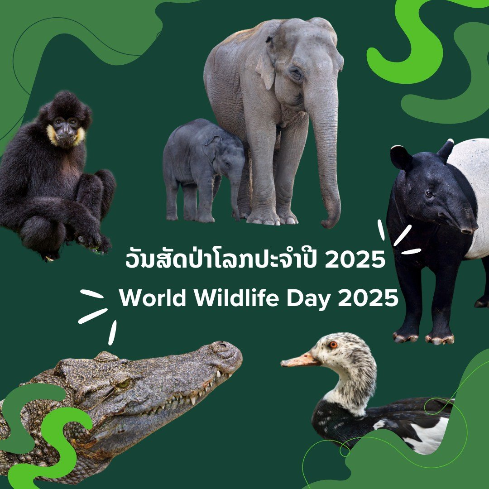
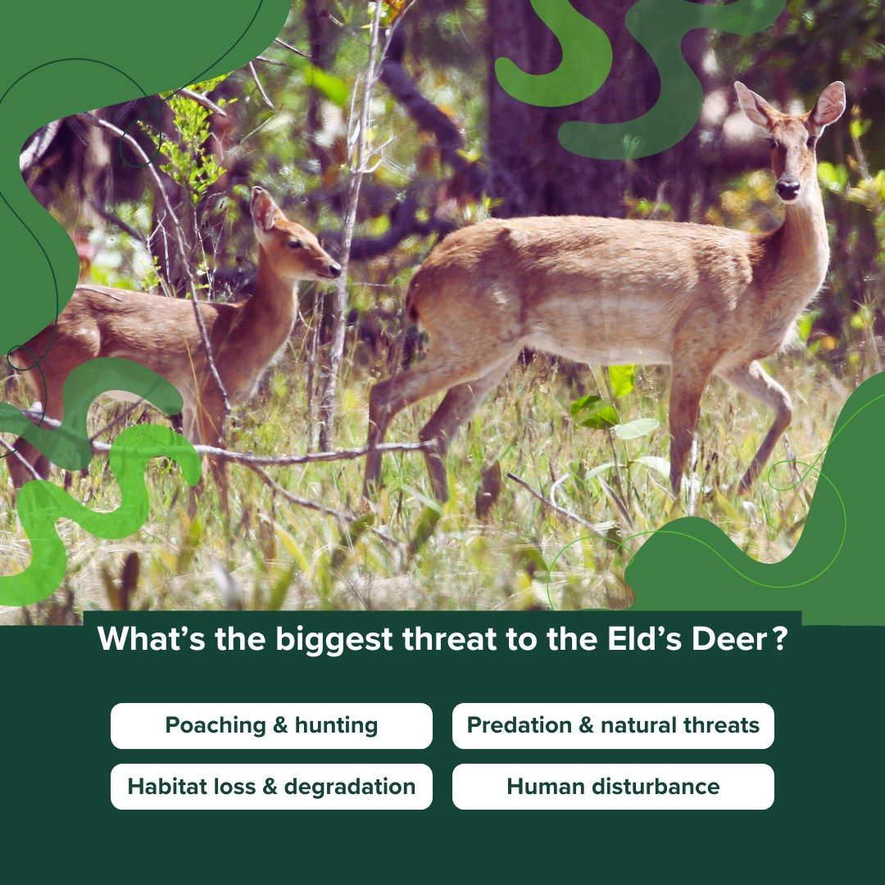
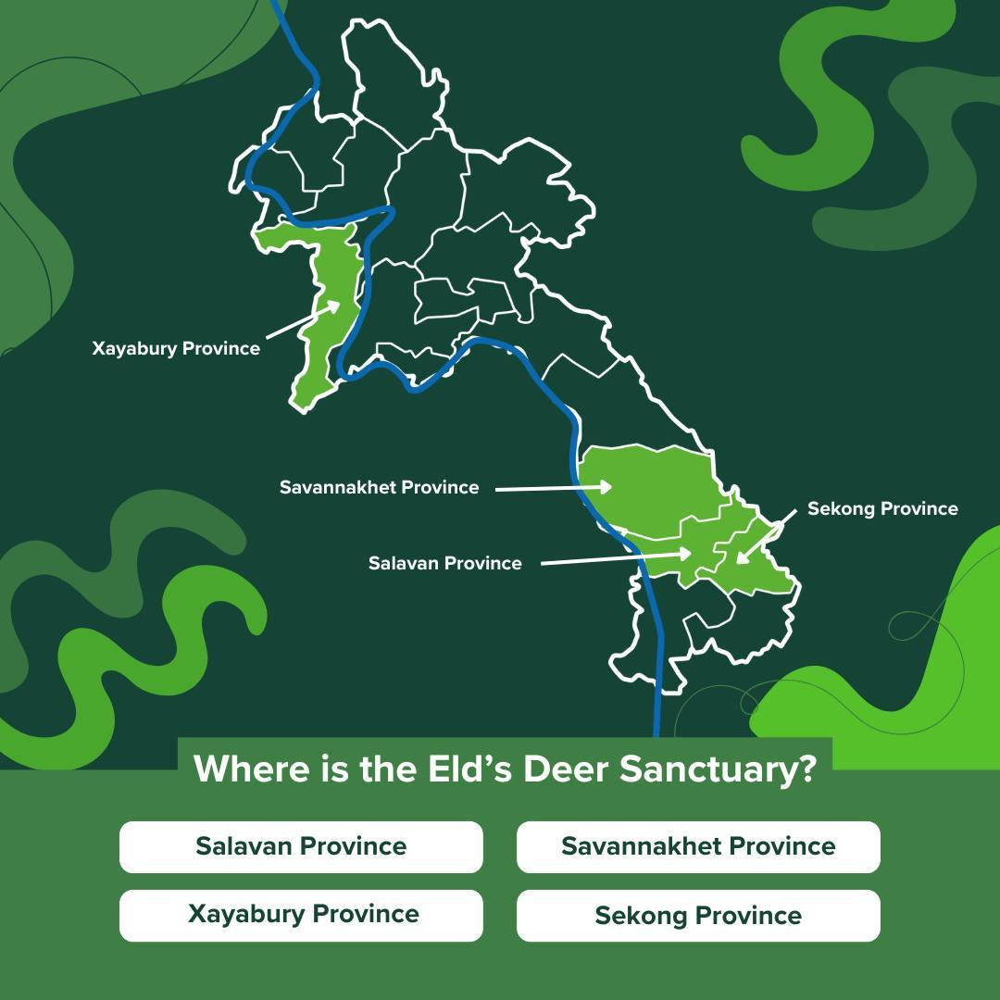
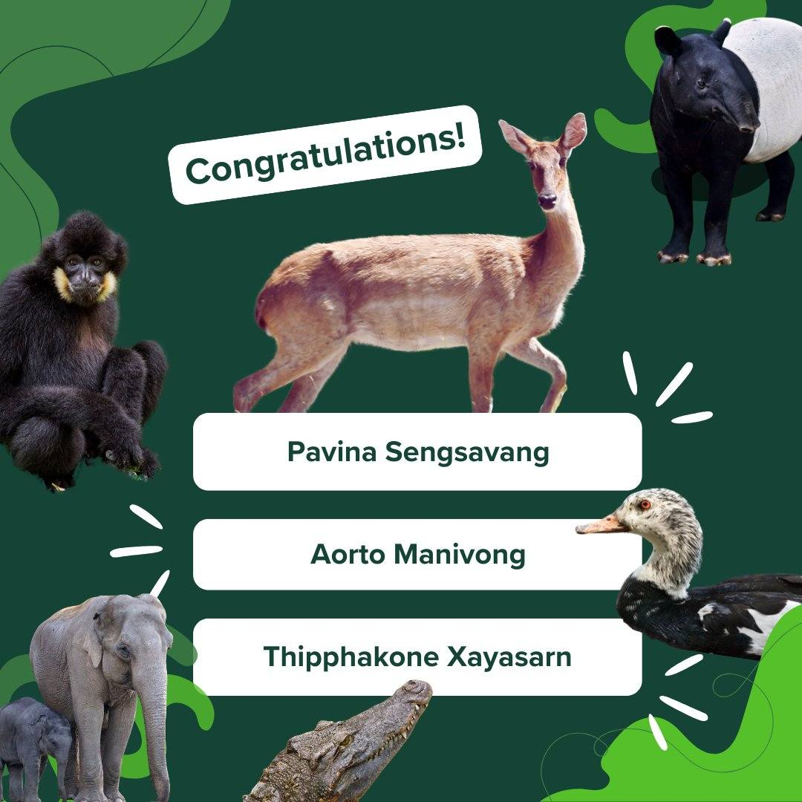

Facebook Post Design and Content Did you know information about youth in Lao PDR - raising awareness about the importance of disaster risk reduction and resilience leading up to the International Day of Disaster Risk Reduction 2024Facebook Cover Design
for the International Day of Disaster Risk Reduction 2024
Video created with existing footage and images
...
UNDP Environment Unit Lao PDR




Facebook Post Design and Content Did you know information about youth in Lao PDR - raising awareness about the importance of disaster risk reduction and resilience leading up to the International Day of Disaster Risk Reduction 2024